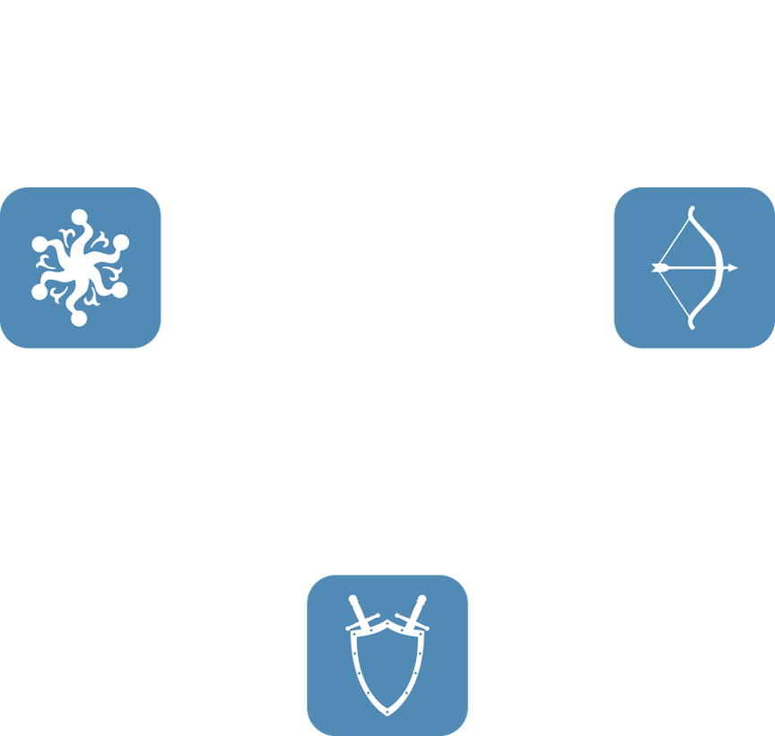

De forma resumida...
Ataques de Combate à Distância funcionam melhor contra usuários de Magia, mas são fracos contra Combate Corpo a Corpo;
Ataques de Magia funcionam melhor contra usuários de Combate Corpo a Corpo, mas são fracos contra Combate à Distância;
Ataques de Combate Corpo a Corpo funcionam melhor contra usuários de Combate à Distância, mas são fracos contra Magia.

Os personagens do estilo suporte são uma excessão ao triangulo. Personagens desse tipo não possuem vantagem nem desvantagem enfrentando qualquer uma das outras formas.
É consideravelmente fraco sozinho, mas muito útil em uma luta em grupo.
Fraquezas específicas terão um bônus extra para a sua chance de acerto se você atacar usando essas técnicas. Por exemplo, monstros com uma fraqueza para setas serão acertados com mais frequência e receberão mais dano se você usar uma arma que dispara setas, em vez de outras armas de Combate à Distância.